Три слайдера раз в час, и состояние в био Telegram обновляется само.
Попробуй окно
Тяни за шапку, двигай слайдеры, жми apply. Наведи на логотип.
так выглядит био
Появляется раз в час. Если запущена игра из Steam, окно подождёт и покажется после того, как ты её закроешь.
Работает на Windows. Python и Telethon, обновляет био от твоего аккаунта.